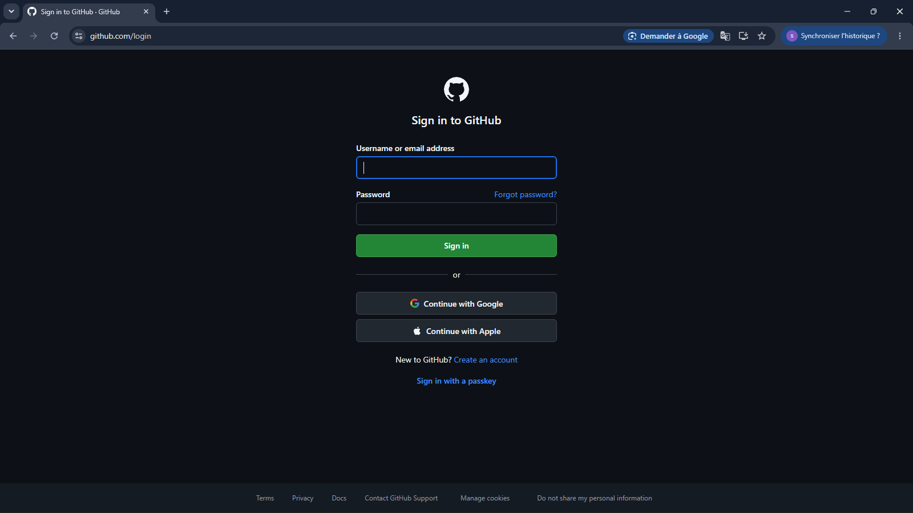
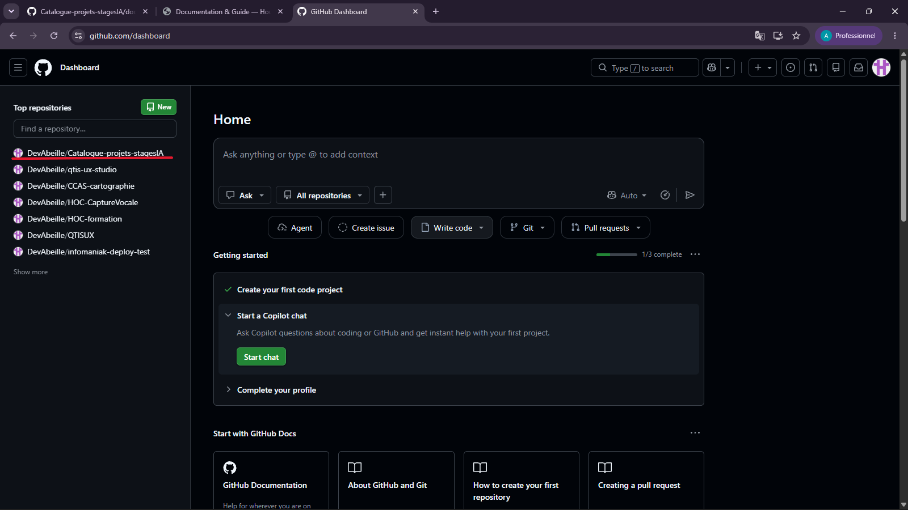
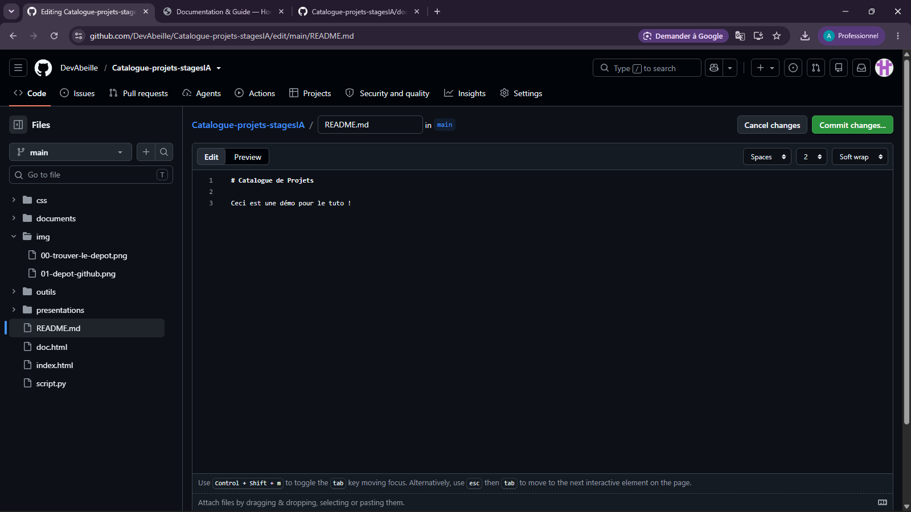
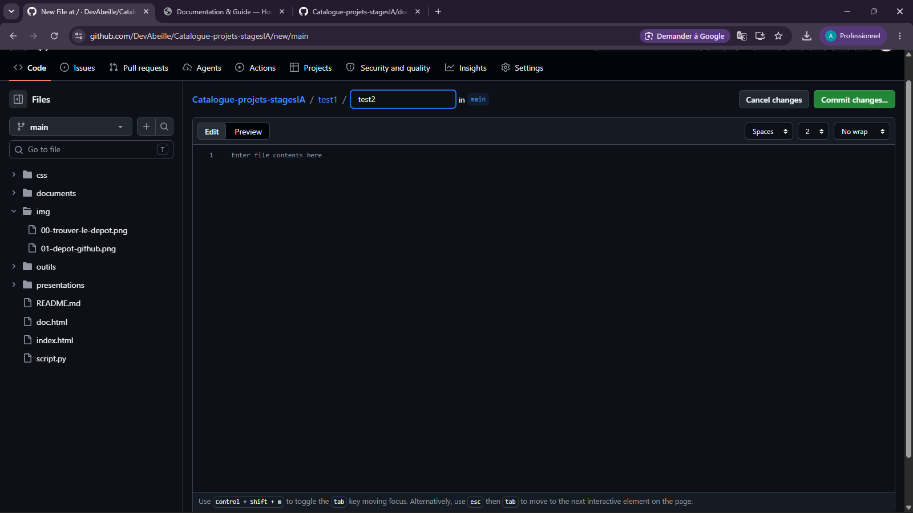
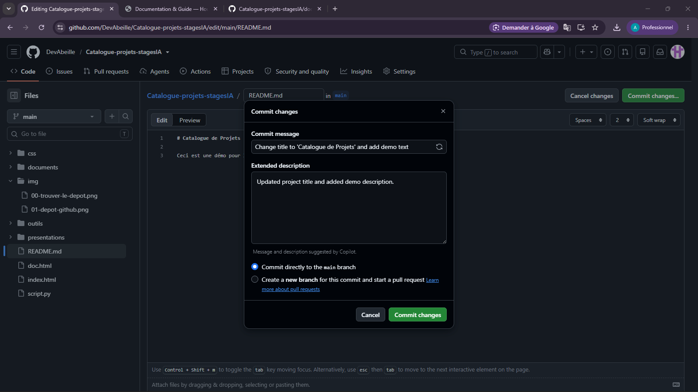

Guide & Documentation Utilisateur
Retrouvez ici la structure du projet et comment utiliser/alimenter le catalogue facilement sans coder.
🔑 1. Se connecter et trouver le dépôt
Avant de pouvoir modifier ou ajouter des documents, vous devez être connecté à votre compte GitHub et accéder au projet de l'organisation.
-
1
Connexion à GitHub
Rendez-vous sur github.com et connectez-vous avec vos identifiants via le bouton Sign in en haut à droite.
📸 Figure 1 : Écran de connexion GitHub (Sign in) -
2
Trouver le dépôt du projet
Accédez à l'organisation ou recherchez Catalogue-projets-stagesIA dans la barre de recherche en haut de page pour ouvrir le projet.
📸 Figure 2 : Recherche et sélection du dépôt dans l'organisation
🔎 2. Explorer le contenu du projet
Tout le travail finalisé est consultable directement depuis votre navigateur web, sans installer aucun logiciel.

💡 Astuce : Vous pouvez lire tous les documents (.md, .html) directement sur GitHub sans avoir à les télécharger sur votre ordinateur.
✏️ 3. Modifier un fichier existant (sans coder)
Pour corriger une coquille ou mettre à jour un texte directement depuis votre navigateur :
-
1
Ouvrir le fichier
Cliquez sur le fichier que vous souhaitez modifier pour afficher son contenu. -
2
Cliquer sur le Crayon ✏️
En haut à droite du texte, appuyez sur l'icône d'édition.
📸 Figure 4 : Emplacement du bouton Crayon (Edit this file) -
3
Enregistrer (Commit)
Cliquez sur le bouton vert Commit changes... en haut à droite, ajoutez un petit mot explicatif et validez.
📁 4. Ajouter un fichier ou créer un dossier par son nom
Vous n'avez pas besoin de créer des dossiers sur votre ordinateur : vous pouvez tout faire depuis le champ texte de GitHub.
-
1
Lancer la création
Cliquez sur Add file > Create new file. -
2
Nommer le fichier et le dossier
Dans le champ Name your file..., tapez le nom du dossier suivi d'un slash /, puis le nom du fichier.
📸 Figure 5 : Taper "nom-dossier/fichier.md" crée automatiquement le dossier ! -
3
Rédiger et Valider
Écrivez votre texte dans le grand rectangle en dessous, puis cliquez sur Commit changes... pour publier.
📸 Figure 6 : Validation du Commit pour appliquer les changements
🗂️ 5. Structure des dossiers sur le projet
Catalogue-projets-stagesIA/
├── index.html ← Page d'accueil du Hub
├── doc.html ← La présente documentation
├── img/
│ ├── 00-connexion-au-github.png
│ ├── 00-trouver-le-depot.png
│ ├── 01-depot-github.png
│ ├── 02-bouton-crayon.png
│ ├── 03-nom-dossier.png
│ └── 04-commit-validation.png
├── css/
│ └── main.css ← Style global (House of Codesign)
└── documents/
└── journees-formation/ ← Les tableaux de bord/planning
├── index.html ← Page d'accueil du Hub
├── doc.html ← La présente documentation
├── img/
│ ├── 00-connexion-au-github.png
│ ├── 00-trouver-le-depot.png
│ ├── 01-depot-github.png
│ ├── 02-bouton-crayon.png
│ ├── 03-nom-dossier.png
│ └── 04-commit-validation.png
├── css/
│ └── main.css ← Style global (House of Codesign)
└── documents/
└── journees-formation/ ← Les tableaux de bord/planning